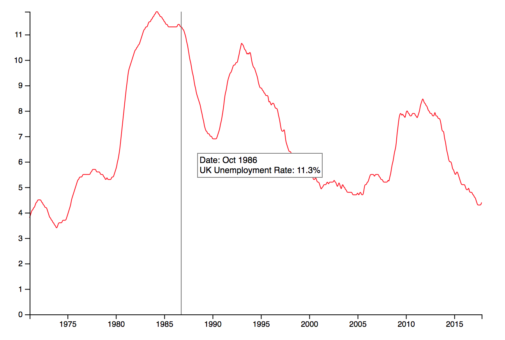
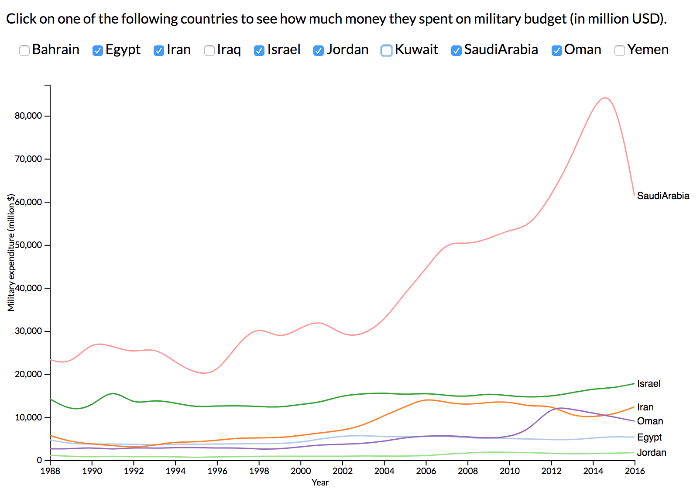
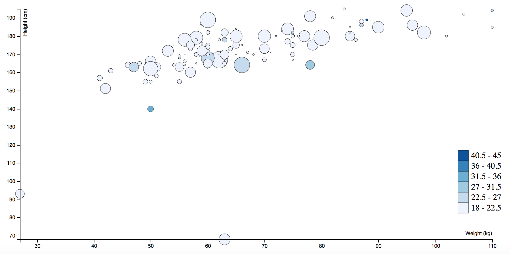
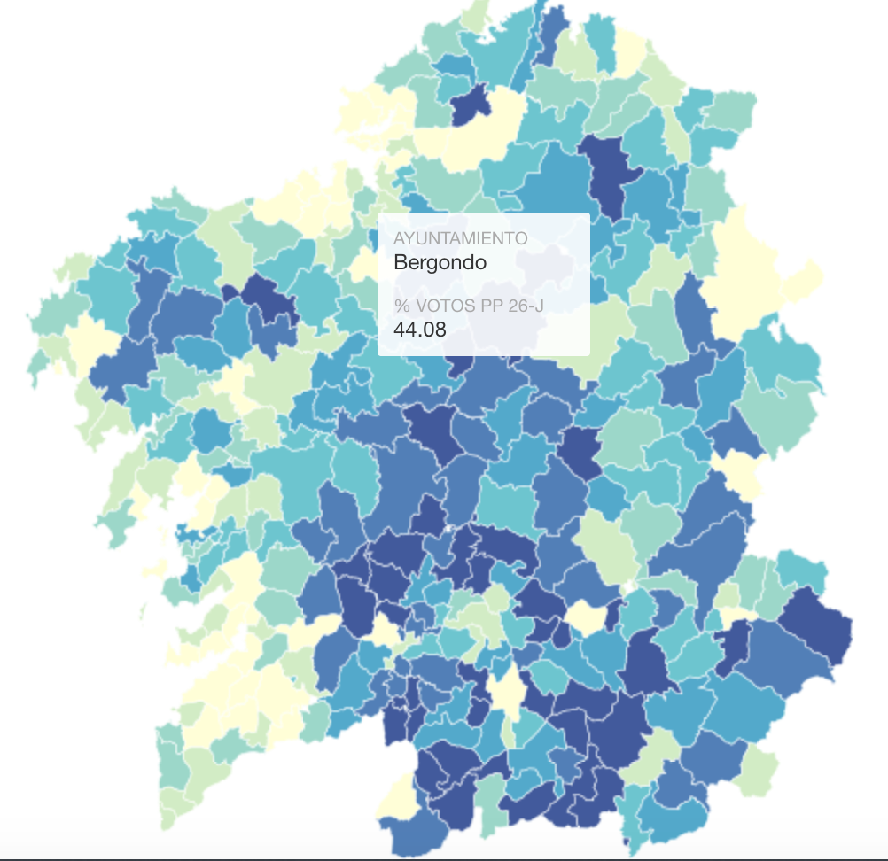

D3 Line chart about UK unemployment rate
Multiple D3 line chart analysing military spending in the Middle East
D3 Scatter plot with data of height, weight, age and heart pulse records for a determined population
Map chart in CartoDB analysing electoral data in the last Galician elections
